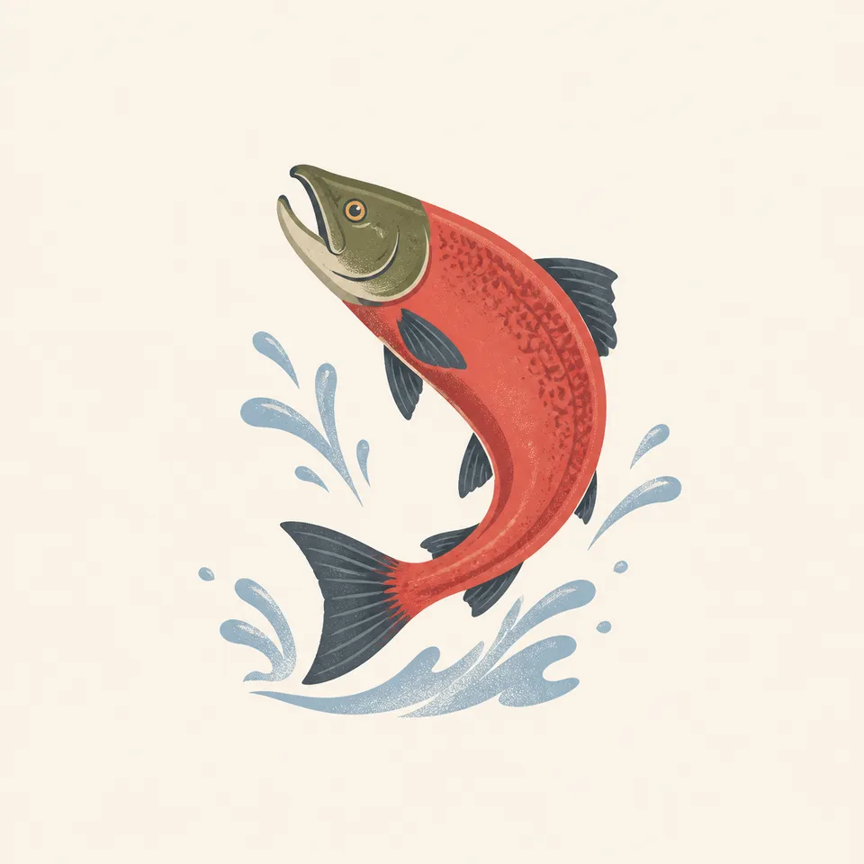
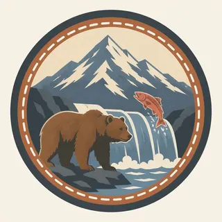

01
Valley of Ten Thousand Smokes
Griggs's name for the 1912 ash. The painting puts steam plumes in that valley. The nature page says most of the fumaroles have cooled. The picture is the idea of 1918 more than a count of vents today.
TrailMark Archive Edition
Alaska | Alaska Peninsula
A monument on September 24, 1918, for the 1912 eruption. A park and preserve on December 2, 1980.
Archive No. TM-KATM-045
National Park since 1980
Collection Valley of Ten Thousand Smokes
Park Overview
President Woodrow Wilson proclaimed Katmai National Monument on September 24, 1918. On December 2, 1980, ANILCA made it Katmai National Park and Preserve.
The centennial pages say the monument protected the Valley of Ten Thousand Smokes, the landscape of the 1912 Novarupta eruption, which they call the largest volcanic eruption of the twentieth century. Robert F. Griggs, working with the National Geographic Society, named the valley and argued for the monument. The original monument was over one million acres.
A centennial note says the park and preserve cover 4 million acres of mountains, rivers, and coast. The presidents page says ANILCA also designated 3.4 million acres as wilderness, and that hunting is allowed in the preserve. The homepage says the park protects 9,000 years of human history and habitat for salmon and thousands of brown bears.
Emotional Thesis
A gray valley, a river, and columns of steam under snow peaks. The nature page says most of those geothermal features have cooled, and that brown bears became as compelling a reason for the boundary as the volcano was.
The extra drawing is a salmon, not a bear. The presidents page says ANILCA names significant salmon populations and high concentrations of brown bears and their denning areas in the same purpose. The fish is the reason the bears are at the river.
Landscape Highlights
01
Griggs's name for the 1912 ash. The painting puts steam plumes in that valley. The nature page says most of the fumaroles have cooled. The picture is the idea of 1918 more than a count of vents today.
02
The monument expanded in 1931 to include the Brooks Camp area. The history page says sport fishing came first as a visitor reason, and that bear watching grew in the 1980s. How to visit Brooks is a current plan, not a paragraph here.
03
ANILCA created a preserve where hunting is permitted, and it named subsistence. Carter's 1978 addition, 1.3 million acres, was the first Katmai proclamation to mention subsistence. The park and the preserve are not the same rule.
Wildlife
The homepage says the park protects habitat for salmon and thousands of brown bears. The nature page says more than 700 plant species are documented.

01
The extra drawing is one leaping salmon. It is the reason in the ANILCA purpose, not a run size.
02
Thousands of brown bears is the homepage's phrase. This essay does not turn it into a tighter census.
03
Moose, foxes, and sticklebacks are on the nature page as part of the assemblage. They are names, not counts.
Geology
The 1918 monument was for the 1912 eruption and the Valley of Ten Thousand Smokes. The nature page says most of the geothermal features have since cooled.
01
The original monument was over one million acres. The centennial size of the present park and preserve is 4 million acres. Those are different years, not a dispute about one map.
02
Wilderness designated in 1980 is 3.4 million acres on the presidents page. That is not the whole 4 million.
03
The steam in the header is the memory of the valley. A current vent count is a science page, not this painting.
Bears and salmon share the Brooks story. When the fish are in the river is a yearly fact on the park site. This essay does not pin a week.
The Valley of Ten Thousand Smokes is a hike or a flight, not a road from the lodge. Access is part of the plan.
The park does not close as a landscape. Visitation does. Read NPS before you treat a July webcam as a January plan.
The history page says the Katmai coast became a bear-viewing place after Brooks. It is a different trip.
Photography
A bear without a salmon is a portrait. A valley without ash is a generic range. Katmai is the eruption and the fish.
01
The bears are why people come. The park sets how close. A webcam is the no-distance option.
02
The drawing is one fish. Do not wade a spawning river to repeat it.
03
The smokes, Brooks, and the coast are three photographs. Label them.
Field Notes
They set the monument aside for a valley of vents. The vents cooled. The bears and the salmon kept the later boundary honest.
TrailMark Field Notes

Badge Story
Either mark is true. The 1918 park is the valley. The 1980 park is also the bears. A badge can hold one of them and name the other.
Ash valley, a river, and a few plumes.
A salmon is the honest animal if the bear would crowd the circle. The fish explains the bear.
Do not draw a Yellowstone geyser. These vents were an eruption's aftermath.
Archive No.045
LocationTen Thousand Smokes
ReleaseValley Mark
Stewardship / Safety
High concentrations of bears are the purpose, not a dare. Hunting rules differ in the preserve. Subsistence is named in the law.
Follow the distance the park posts at Brooks River. The webcam exists so that not everyone has to stand on the bank.
Do not invent a right to hunt because you are in Alaska. The preserve is the place the 1980 law allows it.
The valley is ash and river, and it is remote. Weather cancels flights.
People have lived here for at least 9,000 years. Brooks was a subsistence river before it was a viewpoint.
Current conditions, fees, and alerts are on the National Park Service site.
Continue the Archive
Kīlauea is still erupting on a human schedule. Katmai's famous eruption was 1912, and the living spectacle now is the bears and the salmon. Denali is the roaded Alaska park already open.